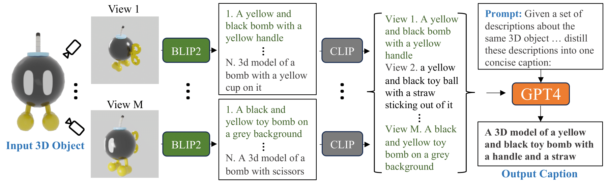

Figure 1. Cap3D provides detailed descriptions of 3D objects by leveraging pretrained models in
captioning, alignment, and language to consolidate multi-view information.
Abstract
We introduce Cap3D, an automatic approach for generating descriptive text for
3D objects. This approach utilizes pretrained models from image captioning,
image-text alignment, and LLM to consolidate captions from multiple views of
a 3D asset, completely side-stepping the time-consuming and costly process of
manual annotation. We apply Cap3D to the recently introduced large-scale 3D
dataset, Objaverse, resulting in 660k 3D-text pairs. Our evaluation, conducted using
41k human annotations from the same dataset, demonstrates that Cap3D surpasses
human-authored descriptions in terms of quality, cost, and speed. Through effective
prompt engineering, Cap3D rivals human performance in generating geometric de-
scriptions on 17k collected annotations from the ABO dataset. Finally, we finetune
text-to-3D models on Cap3D and human captions, and show Cap3D outperforms;
and benchmark the SOTA including Point·E, Shape·E, and DreamFusion.
Approach

Figure 2. Overview of Cap3D. Left to Right: (1) Render 3D objects from M = 8 camera angles
to capture object details (2) Generate N = 5 image captions per rendered image using BLIP2; (3)
Select one caption for each image based on its similarity to the image encoding using CLIP; (4) Use
GPT4 to consolidate all selected captions into a final, summary of the object.
@article{Rockwell2023,
author = {Chris Rockwell and Tiange Luo and Honglak Lee and Justin Johnson},
title = {Scalable 3D Captioning with Pretrained Models},
journal = {arXiv},
year = 2023
}
{kind=link}
{kind=link}